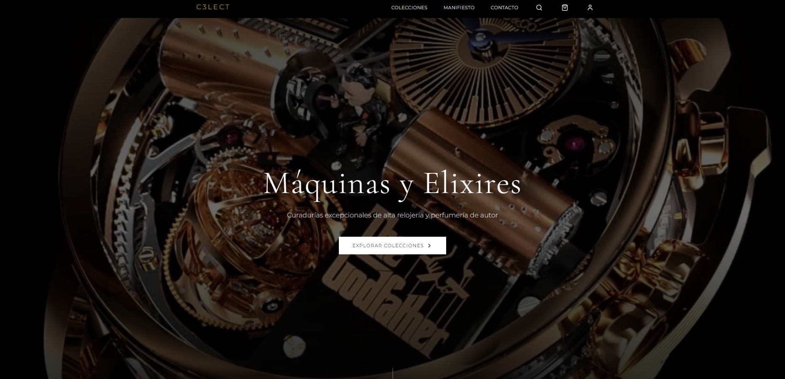
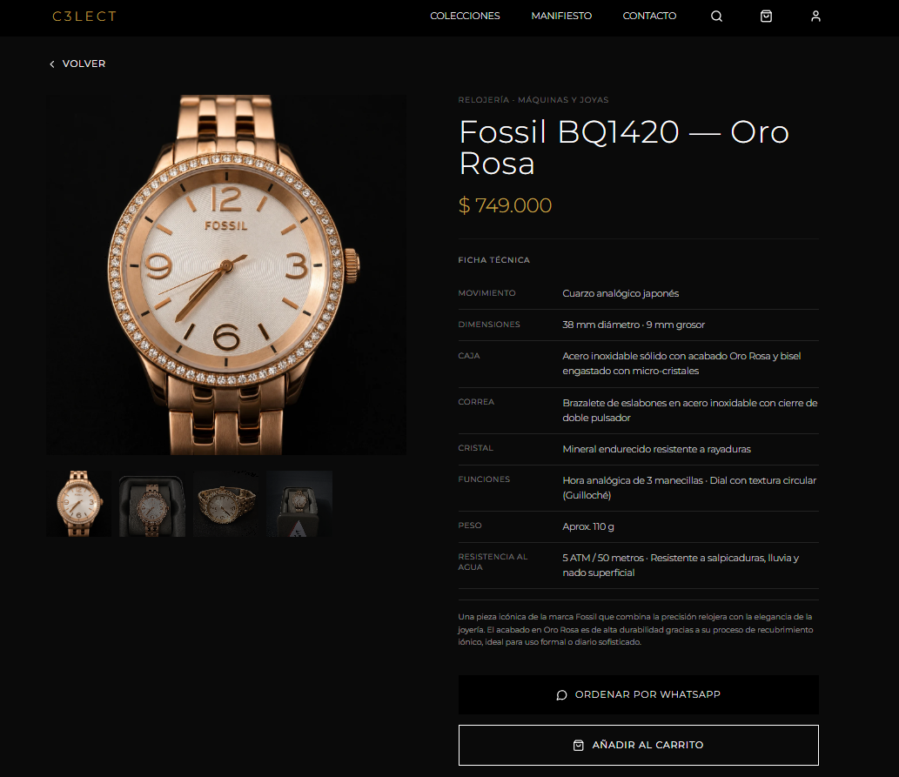

Qué es
Una SPA React/Vite con catálogo público, cuenta, checkout y panel administrativo para C3LECT.
VerificadoUn catálogo digital de relojería y perfumería que convierte la curaduría de C3LECT en una experiencia de compra clara, sobria y accionable.
Bóveda reduce la fricción entre descubrir una pieza y iniciar una compra, mientras concentra la operación comercial en una consola protegida.
Una SPA React/Vite con catálogo público, cuenta, checkout y panel administrativo para C3LECT.
VerificadoReemplaza el catálogo disperso de WhatsApp por una experiencia de producto consistente, consultable y con stock visible.
Documentado + inferidoImplementación frontend amplia; backend y salud del despliegue quedan fuera de la evidencia directa de este workspace.
Evidencia parcialLa solución no solo muestra productos: organiza la información necesaria para que el comprador avance con confianza.
Fotos sueltas, precios repetidos a mano y disponibilidad dependiente de la memoria del vendedor. La conversación empezaba antes de que existiera una vitrina común.
El visitante explora colecciones, filtra por categoría, marca, género y precio, consulta una ficha profunda y llega al checkout o a WhatsApp con contexto.
El flujo principal está implementado en rutas, contexts y contratos HTTP identificables.
Home, colecciones y búsqueda.
Filtros y detalle técnico/olfativo.
Carrito con límite de stock.
Checkout, contraentrega o Mercado Pago.
Cuenta, pedidos, reseñas y contacto.
El catálogo público lee vistas de Supabase directamente; las operaciones transaccionales y administrativas pasan por el cliente HTTP modular y la C3LECT API.
La implementación concentra el acceso a datos en contratos visibles: vistas públicas para lectura; API modular para operaciones con sesión o efectos comerciales.
catalogo_publico y resenas_publicas alimentan la vitrina sin duplicar reglas de negocio en la UI.
Auth, account, orders, payments, resenas, metrics e inventario viven como contratos separados bajo src/app/api/.
El carrito persiste en localStorage; la sesión usa sessionStorage con refresh token.
Más que una lista de dependencias: cada pieza está conectada a una responsabilidad observable en el código.
Cada capacidad apunta a una evidencia concreta para que el Blueprint sea útil en una revisión técnica o académica.
Filtros por categoría, marca, género y precio; disponibilidad y producto destacado.
Ver evidencia →Especificaciones técnicas para relojería y pirámide olfativa para perfumería.
Ver evidencia →Checkout con contraentrega o Mercado Pago, además de enlace contextual a WhatsApp.
Ver evidencia →Login/password, OTP, perfil, direcciones, pedidos y reseñas vinculadas a compras recibidas.
Ver evidencia →Dashboard, catálogo, inventario, pedidos, ventas, compras, gastos, promociones y auditoría.
Ver evidencia →CSP, redirects SPA y cabeceras de seguridad están definidos en public/.
Las capturas entregadas muestran una identidad visual consistente: negro, dorado, tipografía editorial y producto como protagonista.


La captura móvil conserva la jerarquía de colección, filtros, producto y navegación compacta. Las interacciones de hover y motion están implementadas en los componentes; su comportamiento en cada dispositivo debe validarse en runtime.
Capturas entregadasEl repositorio contiene configuración de build y hosting, pero no reemplaza una comprobación del entorno vivo.
pnpm build, separación de chunks, redirects de SPA, sitemap, CSP y headers están presentes en el repositorio.
README declara Cloudflare Pages para frontend, Render para API y Supabase para PostgreSQL. Se conserva como reporte hasta realizar una prueba autorizada.
DocumentadoLa madurez documental aumenta cuando las incógnitas quedan visibles y accionables.
Backend externo. Confirmar autorización, persistencia, webhook de Mercado Pago y políticas server-side revisando `c3lect-api`.
Producción. Confirmar salud y versión desplegada en Cloudflare Pages, Render y Supabase mediante observación autorizada.
Seguridad de datos. Verificar RLS, secretos, retención, backups, auditoría y límites de acceso fuera del frontend.
Bóveda C3LECT ya expresa una propuesta de producto reconocible: curaduría, detalle y compra sin fricción. El siguiente salto de confianza es cerrar la evidencia operativa.